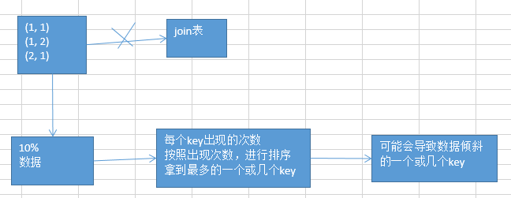
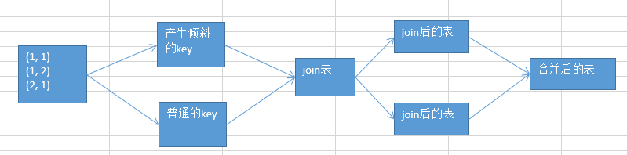

32.数据倾斜解决方案之sample采样倾斜key单独进行join
思路
其中某一个RDD/Hive表中的少数几个key的数据量过大，而另一个RDD/Hive表中的所有key都分布比较均匀，那么采用这个解决方案是比较合适的。 将少数key数据量过大的RDD进行采样，对key进行排序，找出最多的key：

将RDD拆分出2个RDD，分别进行join，最后将join后的表惊醒union操作。

实现思路
将有数据倾斜的RDD中倾斜Key对应的数据集单独抽取出来，加上随机前缀,放一个RDD中；
另外一个RDD每条数据分别与随机前缀结合形成新的RDD（相当于将其数据增到到原来的N倍，N即为随机前缀的总个数）；
然后将二者Join并去掉前缀。然后将不包含倾斜Key的剩余数据进行Join。
最后将两次Join的结果集通过union合并，即可得到全部Join结果。
这种方案什么时候适合使用？
其中一个RDD只有少数key数据量特别大，另一个key分布均匀
对于join，优先考虑使用BroadCast将reduce join转换map join。
如果两个RDD数据都比较大，但是数据倾斜的key就一个或几个（尽量建议是一个key）。
步骤：采样sample(参数：是否取后放回，取多少比例，取后的partition)，或者是直接用countByKey()的方式，计算RDD各个key对应的数据量；此时如果你发现整个RDD就一个，或者少数几个key，是对应的数据量特别多。
此时可以采用这种方案，单拉出来那个最多的key；单独进行join，尽可能地将key分散到各个task上去进行join操作。
什么时候不适用呢？
如果一个RDD中，导致数据倾斜的key，特别多；
具体实现
对被关联的RDD中过滤出key，扩大最大的随机数倍数。
将leftRDD中倾斜的key（即9500048与9500096）对应的数据单独过滤出来，且加上1到24的随机前缀，并将前缀与原数据用逗号分隔（以方便之后去掉前缀）形成单独的leftSkewRDD
将rightRDD中倾斜key对应的数据抽取出来，并通过flatMap操作将该数据集中每条数据均转换为24条数据（每条分别加上1到24的随机前缀，这里就相当于是扩大了24倍了），形成单独的rightSkewRDD （其实和最后一个解决方案是一个意思，只是这里是过滤出了key局部处理。）
将leftSkewRDD与rightSkewRDD进行Join，且在Join过程中将随机前缀去掉，得到倾斜数据集的Join结果skewedJoinRDD
将leftRDD中不包含倾斜Key的数据抽取出来作为单独的leftUnSkewRDD
对leftUnSkewRDD与原始的rightRDD进行Join，得到Join结果unskewedJoinRDD
通过union算子将skewedJoinRDD与unskewedJoinRDD进行合并，从而得到完整的Join结果集
为啥是flatMap算子（对算子没反应过来）：
// 给key aaa前面加上1到100，扩大100倍RDD，用flatMap。
val rdd = spark.sparkContext.parallelize(List(("aaa", "abcd")))
val targetRDD = rdd.flatMap(t => {
var result = ArrayBuffer[Tuple2[String,String]]()
for (tmp <- 0 to 100){
result = (tmp+"|"+t._1, t._2) +: result
}
result
})
targetRDD.foreach(t=>println(t._1+"="+t._2))
如单独出来LeftRDD的key是一个或者少数几个，还可以进一步优化操作。
先将LeftRDD的key过滤出来一个FilterLeftRDD， 就是说，咱们单拉出来了，一个或者少数几个可能会产生数据倾斜的key，然后还可以进行更加优化的一个操作；
对于那个key，从另外一个要join的表中，也过滤出来一份该key数据，比如可能就只有一条数据。userid2infoRDD，一个userid key，就对应一条数据。
然后呢，采取对那个只有一条数据的RDD，进行flatMap操作，打上100个随机数，作为前缀，返回100条数据。
单独拉出来的可能产生数据倾斜的RDD，给每一条数据，都打上一个100以内的随机数，作为前缀。 再去进行join，是不是性能就更好了。肯定可以将数据进行打散，去进行join。join完以后，可以执行map操作，去将之前打上的随机数，给去掉，然后再和另外一个普通RDD join以后的结果，进行union操作。